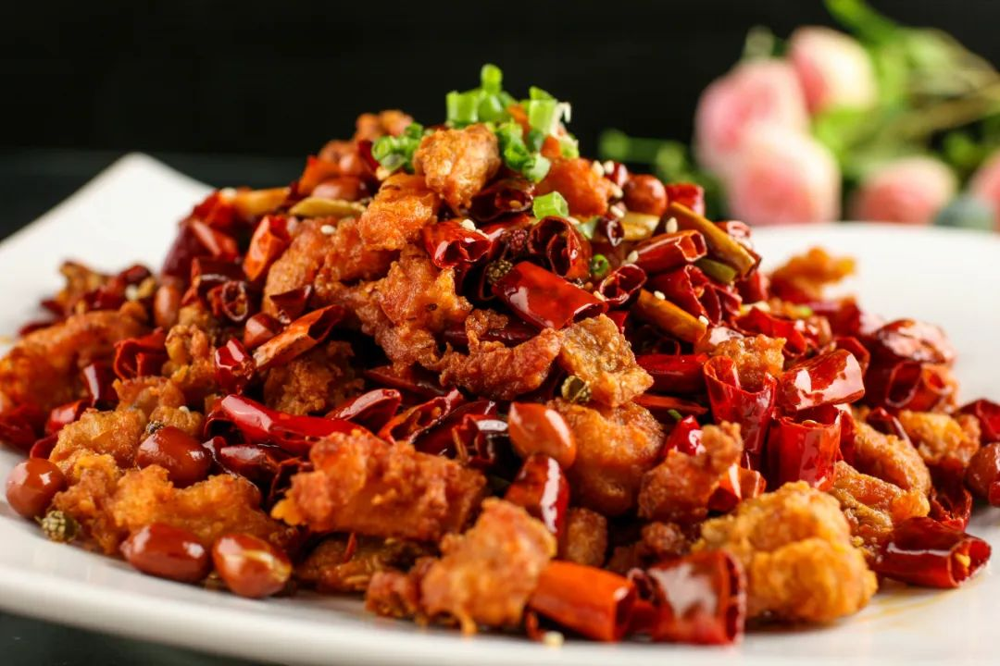

Spicy chicken

Description
This is a simple and flavorful recipe for spicy chicken that is perfect
for a quick and easy meal. The chicken is marinated in a mixture of
spices, then pan-fried until crispy and cooked through. It is served with
a spicy sauce that is made with a combination of chili peppers, soy sauce,
vinegar, and honey.
Ingredients
- 1 pound boneless
- 1 tablespoon cornstarch
- 1 tablespoon soy sauce
- 1 tablespoon rice vinegar
- 1 teaspoon sesame oil
- 1 teaspoon grated ginger
- 1 clove garlic, minced
- 1/2 teaspoon chili powder
- 1/4 teaspoon cayenne pepper
- Salt and pepper to taste
Steps
-
Marinate the chicken: In a large bowl, combine the cornstarch, soy
sauce, rice vinegar, sesame oil, ginger, garlic, chili powder, cayenne
pepper, salt, and pepper. Add the chicken and toss to coat evenly. Let
marinate for at least 30 minutes, or up to overnight.
-
Cook the chicken: Heat the vegetable oil in a large skillet over
medium-high heat. Add the chicken and cook in batches until golden brown
and cooked through, about 5 minutes per batch. Transfer the cooked
chicken to a plate.
-
Make the sauce: In the same skillet used to cook the chicken, add the
garlic, ginger, and chili pepper (if using). Cook for about 30 seconds,
until fragrant. Stir in the soy sauce, rice vinegar, honey, and
cornstarch. Bring to a simmer and cook until the sauce thickens, about 2
minutes.
-
Serve: Return the cooked chicken to the skillet and toss to coat with
the sauce. Serve immediately over rice or noodles, with your favorite
toppings.